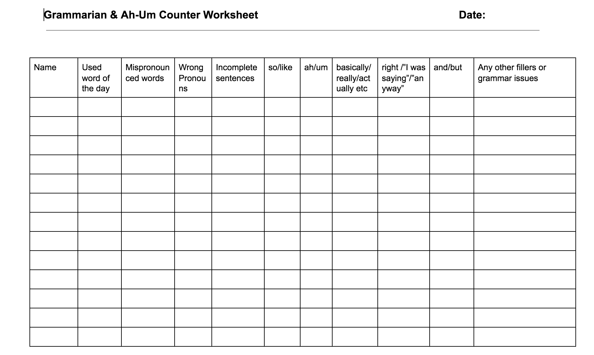

<!-- Main -->
	<div id="main" class="wrapper style1">
		<div class="container">
			<section>
				<p align="center"></p>
				<div class="10u -1u">
					<header class="major">
						<!-- <h2>Blog</h2> -->
						<!-- <span class="byline">Integer sit amet pede vel arcu aliquet pretium</span> -->
					</header>
					<h2>Summary of the Role</h2>
					<ul>
						<li>1. The Grammarian and Ah-um counter helps club members improve their grammar and vocabulary, and keeps track of all filler words that people use during the meeting. </li>
						<li>2. Before the meeting, choose a word of the day and send the word of the day and 2 example sentences with the word to the Toastmaster and the <a href="mailto:arindampaul.bits@gmail.com">President</a>.</li>
						<li>3. At the start of the meeting, explain your role to the group. </li>
						<li>4. Write down the language and grammar usage of all speakers, noting incomplete sentences, mispronunciation, grammatical mistakes, non-sequiturs, malapropisms, etc</li>
						<li>5. Also, note down the number of ahs, ums, likes, etc. that each person says in the meeting </li>
						<li>6. Give a report at the end of the meeting. </li>
</ul><br>
<h2>Evaluation form</h2>
Download: <a href="ahumgrammarian.pdf"></a>
	
	<br>
	<h2>Videos</h2>
	<p align="center">
		<iframe height="500"
		src="https://www.youtube.com/embed/_fLK7AuSV-8">
		</iframe>
	</p>
<!-- ><h2>Resource from Toastmasters International</h2></a> -->

<h2>Resources:</h2><br>
<li>Resources from Toastmasters Website: <a href="https://www.toastmasters.org/Membership/Club-Meeting-Roles/Grammarian">Grammarian </a>,<a href="https://www.toastmasters.org/Membership/Club-Meeting-Roles/Ah-Counter">Ah-Um Counter</a></li>

<li><a href="http://sixminutes.dlugan.com/stop-um-uh-filler-words/"> How to Stop Saying ah-ums </a></li>
<li><a href="http://sixminutes.dlugan.com/pause-speech/"> Pausing while speaking </a></li>

				</div>
			</section>
		</div>
	</div>
